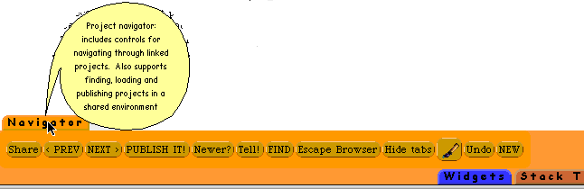
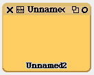
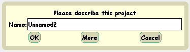
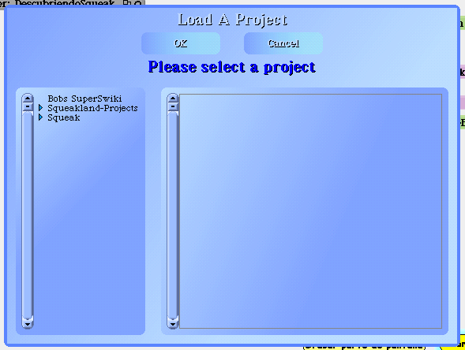

En la parte inferior tenemos el navegador de proyectos.
Al extraerlo y mantener el mouse sobre el veremos

Al pulsar el botón new, aparece en pantalla
Al tocar con el mouse dentro de este morph entramos al proyecto y se nos presenta una pantalla totalmente en blanco
Una vez que hayamos terminado
de trabajar con el proyecto , pulasmos el
botón PUBLISH IT del navegador
y aparece en pantalla
Al pulsar OK , sale la pantalla para elegir donde guardar el proyecto, `por el momento podemos elegir Savc On Local disk only
Como encontrar y ejecuttar proyectos
Pulsar el boton FIND y le aparecera el siguiente cuadro de diálogo.
Si es nuestra primera experiencia , no tendremos proyectos propios.
Si dispone de Internet. conectarse y luego elegir Bobs SuperSwike.
Le recomiendo buscasr LearningMorphic.013.pr
o el mas nuevo que haya.
Como punto de partida a los morphs , por aquí hay que empezar.
Si quiere perder su tiempo, pruebe Puzzle y espero que le guste
Cuando haya hecho sus proyectos, estos se guardarán por defecto en la carpeta Squeakletss dentro de la carpeta Squeak